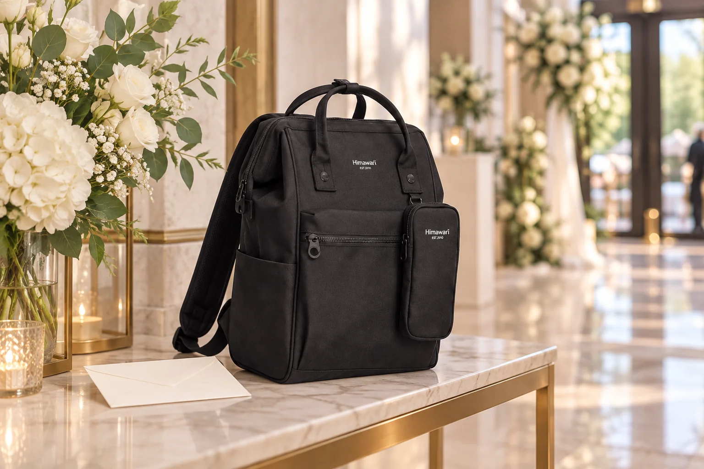

하객의 가방은 접수대와 식사 자리 사이에서

결혼식에 참석하는 날은 한 건물 안에서도 머무는 자리가 자주 바뀝니다. 로비에서 인사를 나누고 접수대를 지나 예식을 본 뒤 식사 장소로 옮겨갑니다. 백팩을 메고 왔다면 앉을 때마다 내려놓고 다시 챙겨야 합니다. 행사에 맞는 가방인지 고민할 때는 옷차림과 함께 이 이동을 생각해볼 만합니다. 내가 가져온 짐을 관리하면서 다른 사람의 통로를 비워둘 수 있는지가 실제 현장에서 필요한 기준입니다.
출발 전에는 초대 안내에서 장소와 시간, 입구를 확인합니다. 이름이 비슷한 행사장이 있거나 한 건물에서 여러 행사가 진행되는 경우라면 해당 안내를 쉽게 열 수 있게 둡니다. 예식 중에는 꺼내지 않을 업무용 자료나 평소 소지품이 있다면 이날 가져갈 이유를 다시 생각할 수 있습니다. 가방이 크냐 작으냐만으로 결정하기보다 실제로 쓸 물건과 계속 운반할 물건을 구분하면 준비할 범위가 줄어듭니다.
로비에서는 필요한 묶음부터
접수에서 사용할 안내나 준비한 봉투가 있다면 가방에서 바로 찾을 수 있는 위치를 정합니다. 봉투는 다른 소지품 밑에 눌리지 않는 상태로 두고, 전달 방식은 초대받은 행사의 안내에 따릅니다. 로비에 들어서며 길을 확인해야 한다면 사람이 줄지어 움직이는 자리에서 백팩 전체를 열기보다 조금 떨어진 곳에서 필요한 것만 꺼낼 수 있습니다. 대기하는 동안 여밈을 닫아두면 나머지 짐을 계속 신경 쓰지 않아도 됩니다.
누군가와 인사를 나눌 때 가방을 급히 돌리면 뒤쪽의 사람이 보이지 않을 수 있습니다. 좁은 접수대 앞이나 사진을 찍는 자리에서는 주변 간격을 확인하고 움직이면 됩니다. 이는 특정 형태의 가방을 배제하는 규칙이라기보다 사람이 몰리는 자리에서 자신의 물건이 차지하는 공간을 보는 일입니다. 손에 휴대전화와 봉투를 함께 들고 있다면 인사 뒤 각각 어디에 돌려놓을지도 미리 정해둘 수 있습니다.
겉옷을 가져간 날에는 백팩과 다른 물건 하나가 더 생깁니다. 행사장에 맡길 수 있는지는 실제 안내를 확인하고, 맡겼다면 찾는 장소와 확인 방법을 기억합니다. 맡길 곳이 없을 경우에는 직접 관리할 수 있는 상태로 이동해야 합니다. 겉옷을 가방에 넣을 생각이라면 집에서 실제로 담아보고 나머지 짐과 함께 닫을 수 있는지를 봅니다. 행사장에서 억지로 밀어 넣느라 종이 봉투를 구기지 않도록 준비하는 것입니다.
일상용 백팩을 그대로 메고 갈 생각이라면 이날 사용할 짐만 남기는 구성을 시도할 수 있습니다. Himawari No.1027 제품 정보의 모델을 참고할 때도 예식 내내 꺼내지 않을 업무 자료가 들어 있는지 먼저 봅니다. 접수에 쓸 묶음과 개인 귀중품을 정리한 뒤 실제 들고 이동할 물건의 개수를 세어보세요. 겉옷을 별도로 들 날에는 백팩 하나만 챙기면 된다는 생각보다 두 물건을 함께 회수할 자리를 정해두는 편이 좋습니다.

예식 자리에서 내려놓을 때
좌석에 앉기 전에 가방을 둘 수 있는 위치를 봅니다. 의자 사이의 간격과 앞뒤 사람의 움직임에 따라 놓을 자리가 달라질 수 있습니다. 바닥에 둘 수 있는 곳이라면 끈이 통로 쪽으로 길게 나와 있지 않도록 정리하고, 빈 의자를 사용하려 한다면 실제 사용 안내를 확인합니다. 자리를 잠시 비울 때 귀중품을 어떻게 관리할지도 생각하세요. 내려놓은 위치와 관리하는 방법이 함께 정해져야 마음 편하게 행사에 집중할 수 있습니다.
사진을 찍거나 축하 인사를 하러 자리를 옮길 때는 휴대전화만 들고 나갔다가 가방을 잊을 수 있습니다. 곧 같은 좌석으로 돌아올지, 바로 식사 장소로 이동할지 먼저 판단하면 챙길 범위가 달라집니다. 자리 이동이 이어진다면 백팩과 겉옷을 함께 가져가고, 맡긴 물건이 있다면 수령 시점을 일정에 포함합니다. 한 번 내려놓은 물건의 개수를 알고 있으면 주변 사람과 이야기하며 이동해도 확인하기 쉽습니다.
동행자가 있다면 서로의 가방을 잠시 맡아주는 방식도 대화로 정해야 합니다. 자신의 물건을 상대 의자 옆에 두었다면 그 사실을 알려두고, 상대가 먼저 이동할 때 어떻게 회수할지 생각합니다. 말없이 같은 자리로 모아두면 누가 어떤 물건을 챙길지 불분명해질 수 있습니다. 물건을 보관하는 책임을 한 사람에게 계속 넘기기보다 각자 가져온 가방과 겉옷을 이동 전에 확인하는 편이 단순합니다.
식사 자리와 돌아가는 길
식사 공간에서는 의자를 빼고 앉는 동작까지 고려해 가방 위치를 정합니다. 음식을 놓는 면에 가방을 올리기보다 현장에서 안내한 위치를 사용하고, 다른 사람이 지나가거나 의자를 움직일 때 끈에 걸리지 않는지 봅니다. 손에 들고 온 작은 선물이나 안내 종이가 있다면 백팩과 따로 놓였는지 기억하세요. 식사 뒤 인사를 나누고 나오기 전에 테이블 주변과 처음 가방을 둔 자리를 한 번 살펴보면 됩니다.
예식 중 꺼냈던 휴대전화는 식사를 하며 테이블에 남기기 쉽습니다. 가방을 메는 순서에 휴대전화와 지갑의 확인을 넣어두면 자리를 뜬 뒤 다시 돌아올 일이 줄어듭니다. 맡겼던 겉옷을 찾았다면 확인 표식이나 임시 종이가 더 필요한지 살펴보고 정리합니다. 행사장 밖으로 나가기 전 귀가에 필요한 교통 안내를 확인할 때도 통로 가운데에서 가방을 열지 않고 멈출 수 있는 자리를 고르면 됩니다.
집에서는 이날만 썼던 안내와 봉투, 임시 표식을 가방에서 꺼냅니다. 일상용으로 다시 사용할 백팩이라면 평소의 열쇠와 소지품을 제자리로 돌려놓습니다. 행사 때 받은 물건이 있다면 다음 외출 짐 아래로 들어가기 전에 따로 보관하세요. 가방 선택을 다시 생각할 일이 있다면 로비에서 무엇을 찾기 어려웠는지, 자리 이동에 겉옷까지 챙길 수 있었는지처럼 실제 동작을 떠올리면 다음 참석의 준비가 구체적으로 달라집니다.